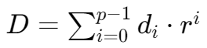
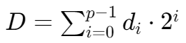
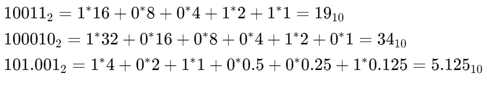
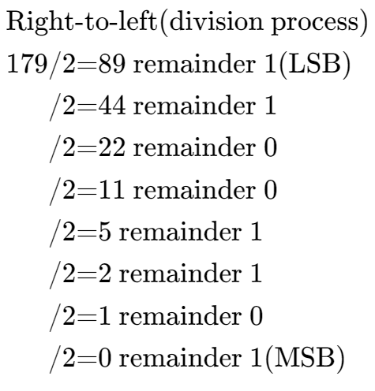
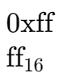

进制,,
Most significant bit (MSB) 二进制最左边一位
Least significant bit (LSB) 二进制最右边一位
X进制转十进制
任意进制转十进制：
- p: number of digits (from 0 to p-1)
- di: value of digit at position I
- r: base or radix
- A digit in position i has weight ri
同理，对于二进制转十进制：

一些计算例
十进制到二进制

十六进制
十六进制使用十六个数字：0-9 以及 A,,, B,,, C,,, D,,, E,,, F,,
十六进制数通常写作：

十六进制和二进制转换
| Binary | Hex | Binary | Hex |
|---|---|---|---|
| 0000 | 0 | 1000 | 8 |
| 0001 | 1 | 1001 | 9 |
| 0010 | 2 | 1010 | A |
| 0011 | 3 | 1011 | B |
| 0100 | 4 | 1100 | C |
| 0101 | 5 | 1101 | D |
| 0110 | 6 | 1110 | E |
| 0111 | 7 | 1111 | F |
二进制——十六进制对照表
二进制到十六进制：从 LSB 开始，每四位对应一个十六进制树，不足四位则补零
十六进制到二进制：把每一个十六进制数对应到四位二进制数